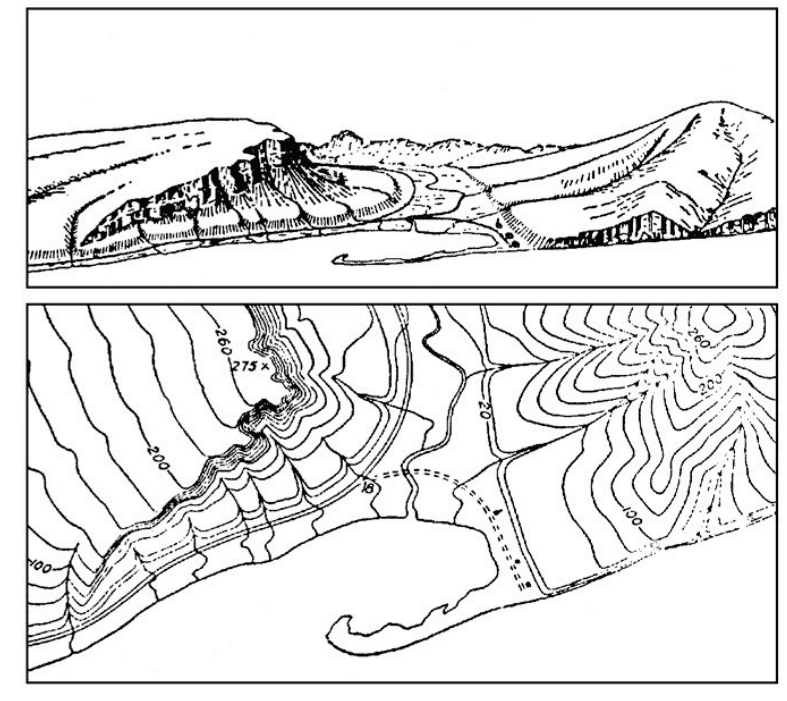
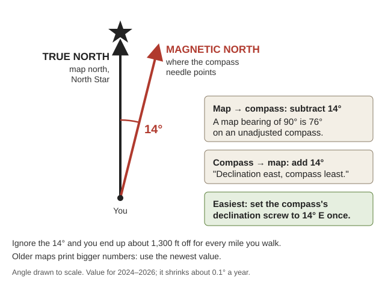
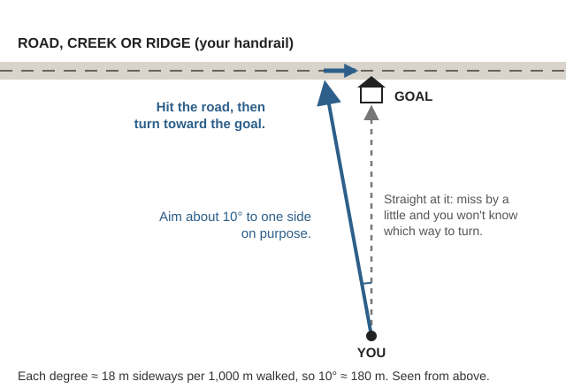
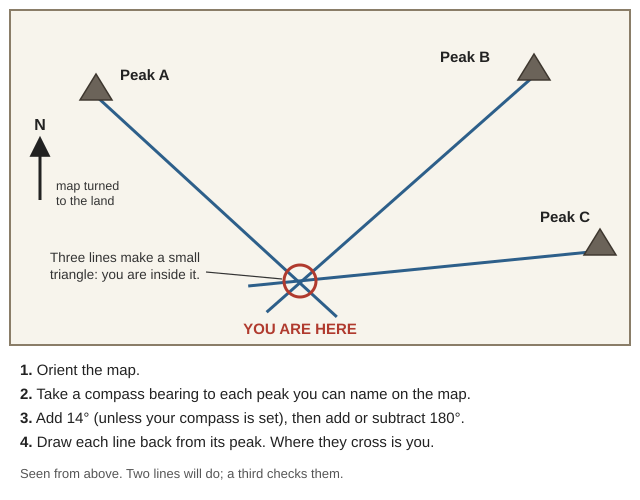
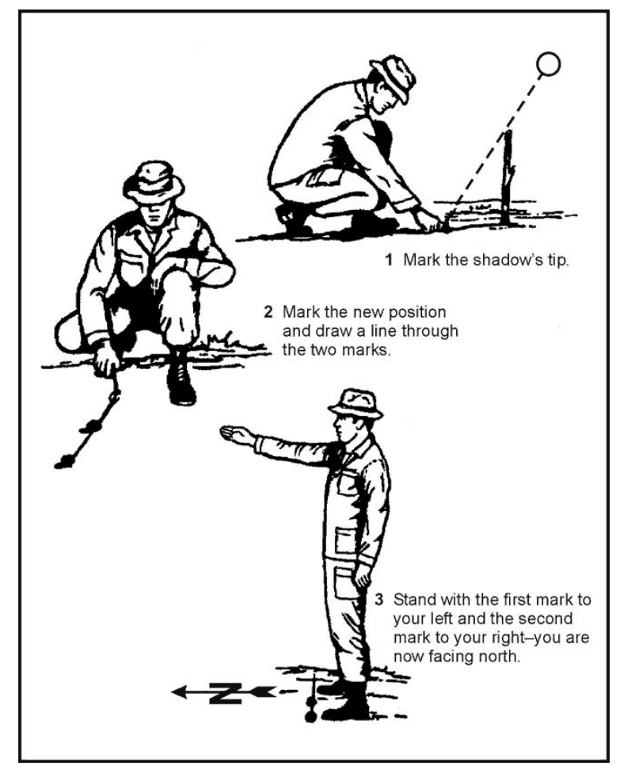
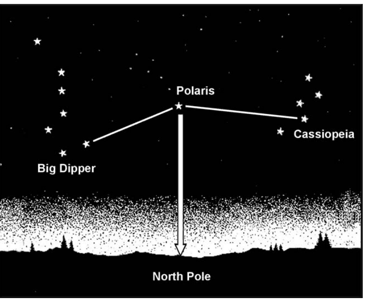

📘 Guides › 🥾 Getting around · 🆘 Emergency · 📇 Index A–Z · 💬 Ask
How to find your way in the hills around the Illinois Valley with a paper map and compass — or with neither — and how to read the weather coming when there is no forecast: map reading, declination, pace count, terrain association, finding yourself when lost, the sun and stars, clouds and wind, our local weather from valley fog to east-wind fire days, lightning, and a home weather log. The books are in Navigation-Weather\Land-Navigation and Navigation-Weather\Weather; the local topo maps are in Maps\Topo-USGS and Maps\Forest-Service (see the Maps section of the Illinois Valley guide).
⚠️ Rules that prevent the worst outcomes
- Set your compass to 14° East. Older maps print bigger numbers; always use the newest. Ignoring declination puts you about a quarter mile off for every mile you walk.
- Leave a written trip plan with someone who stays home. With no search and rescue, nobody comes unless someone knows your route and your return time (NPS Trip Plan).
- When you hear thunder, move: off peaks and ridges, away from taller trees, and out of rock overhangs and cave mouths. Wait 30 minutes after the last thunder (Backcountry Lightning, pp. 1–2).
- Never cross fast water. Six inches can knock you off your feet; two feet carries away most vehicles (Spotter Guide, p. 12).
- A dry east wind after a front in late summer or fall is extreme fire weather — the pattern behind the September 2020 fires. Be ready to leave.
- Sun, watch, moon and moss methods are rough. Check any no-compass direction with a second method before you commit to a long walk.
Scale. The library's local quads (US Topo and FSTopo) are 1:24,000: 1 inch = 2,000 ft (using the bar scale; Topographic map). On the 1:100,000 Forest Service sheet, 1 inch is about 1.6 miles. Map distance is "as the crow flies"; walking a steep slope is farther (USGS FS 035-01, p. 1; PMS 475, p. 133).
Contour lines (FS 035-01, p. 1; PMS 475, pp. 41–42; Contour line; a contour map beside the land it shows; FM 3-25.26, p. 107):

The same land as a picture (top) and as contour lines (bottom): the lines almost touch at the cliffs and spread far apart on level ground (PMS 475, p. 40).Name the land. Learn to spot these on the map and on the ground — it is the heart of navigating without GPS (FM 3-25.26, pp. 115–118):
| Feature | On the map | On the ground |
|---|---|---|
| Hill (drawing) | Closed rings | Ground falls away on all sides |
| Saddle (drawing) | Hourglass between two hills | Low dip between two high points |
| Valley (drawing) | V or U contours with a stream | Low ground between ridges |
| Ridge (drawing) | Long line of high ground | Ground falls away on three sides |
| Depression (drawing) | Ring with tick marks inside | A hollow |
| Draw (drawing) | Small V pointing uphill | Small gully |
| Spur (drawing) | Small U pointing downhill | Finger of high ground off a ridge |
| Cliff (drawing) | Contours touching or merged | Near-vertical drop |
Symbols: US Topo Map Symbols (2023) matches the library's GeoPDF maps; the older USGS symbol booklet matches older quads and FSTopo.
Grid position. The valley is in UTM Zone 10 ("10T" on the quads). Grid lines are every 1,000 m. Read right first (easting), then up (northing) (USGS FS 077-01, pp. 1–2; grid lines; reading a UTM coordinate; UTM).
📚 Go deeper: FM 3-25.26 — the Army's full map-reading course; PMS 475 — firefighter workbook with exercises; FSTopo Cave Junction — practice on your home sheet.
Use 14° East for the Illinois Valley. NOAA's model gives 13.9° E for Cave Junction in November 2026, shrinking about 0.1° a year. The FSTopo Cave Junction sheet prints 14°8′ (2024) and the US Topo sheet 14°18′ (2023). Older maps print larger numbers — use the newest value. See Magnetic declination.
Which way to correct (FS 035-01, p. 2; PMS 475, p. 86):

Here the compass needle points 14° east of true north: subtract 14° going from map to compass, add 14° going back (a diagram drawn for this guide).Why it matters: 1° of error puts you about 920 ft off in 10 miles (PMS 475, p. 86). Ignoring all 14° puts you about 1,300 ft off for every mile (general practice: worked out from the angle).
Grid north on the Cave Junction quad is only about half a degree from true north — ignore it on foot. That's why the margin shows three norths (FM 3-25.26, p. 62; three norths).
The way back (back azimuth): add 180° if the bearing is 180° or less; subtract 180° if more. A slip here can be disastrous — check it twice (FM 3-25.26, p. 58; direct and back bearing).
Compass habits (PMS 475, p. 84; FM 3-25.26, p. 97; parts of a compass):
📚 Go deeper: USGS Finding Your Way — taking a bearing off a topo map; PMS 475, pp. 82–86 — parts of a compass and setting declination.
(FM 3-25.26, pp. 52–53; PMS 475, pp. 133–134)
⚠️ The Forest Service (NWCG) counts a "pace" as two steps — every time the same foot lands. The Army counts every step. Pick one and never mix them.
📚 Go deeper: PMS 475, p. 133 — pacing worksheet; FM 3-25.26, p. 52 — pace count and other ways to measure distance.
Match the map to the ground as you go (drawing). It is far more forgiving than walking a compass line, because you keep comparing what you expected to see with what you do see. Pure compass walking piles up errors with every detour (FM 3-25.26, pp. 131, 139). Keep the map turned so its north matches the land (p. 140; by the land; by compass).
Plan a route this way (FM 3-25.26, p. 140):
Aim off on purpose (FM 3-25.26, p. 100; deliberate offset). Heading for a spot on a road or creek, aim about 10° to one side. When you hit the road, you know which way to turn. Each degree moves you about 18 m sideways per 1,000 m walked, so 10° is about 180 m.

Aim to one side of the spot on purpose; when you reach the road you know which way to turn (a diagram drawn for this guide).📚 Go deeper: FM 3-25.26, ch. 11 — terrain association in depth; MVUM Wild Rivers — which forest roads are real roads.
Resection (FM 3-25.26, p. 68; Position resection; drawing; PMS 475, p. 131):

Resection: back bearings drawn from two or three peaks you can name cross where you stand (a diagram drawn for this guide).Local candidates are peaks on the FSTopo sheets such as Grayback Mountain, Kerby Peak and Eight Dollar Mountain — check on the sheet which you can really see from where you stand (rule of thumb).
Modified resection (p. 70; drawing): if you know you're on a road, river or ridgeline, one bearing to one landmark is enough. You are where that line crosses your road or ridge.
📚 Go deeper: FM 3-25.26, pp. 68–70 — intersection, resection and modified resection with drawings; PMS 475, p. 131 — finding your own position by triangulation; AFH 10-644, p. 406 — azimuth, biangulation and triangulation.
| Method | How | How far off |
|---|---|---|
| Shadow stick | Push a 3-ft stick into level ground and mark the shadow tip. Wait 10–15 min and mark it again. The line runs west → east; the first mark is always west. First mark on your left = you face north. Works by bright moonlight too. | Gives an approximate east–west line (FM 21-76, pp. 231–232; FM 3-25.26, pp. 102, 141; drawing) |
| Watch | Point the hour hand at the sun. South is halfway between the hour hand and 12 (halfway to 1 on daylight time). | The Army warns it can be in error and cause circling — recheck with a shadow stick after an hour (FM 3-25.26, pp. 102–103; drawing). Here the sun is due south about 12:15 PST / 1:15 PDT, give or take up to 16 minutes by season (computed) |
| Sunrise / sunset | The sun rises due east only in March and September (drawing). | At our latitude, sunrise is about 32° north of east in late June and 32° south of east in late December (computed) |
| North Star (Polaris) | Follow the two "pointer" stars at the end of the Big Dipper's cup about five times their spacing (Big Dipper and Cassiopeia; northern constellations; Cassiopeia). | Within 1° of true north — the best no-compass method. Here it sits about 42° up, a bit under halfway up the northern sky (FM 3-25.26, p. 103; FM 21-76, p. 234) |
| Moon (phases) | Rises before sunset: lit side faces west. Rises after midnight: lit side faces east. | Rough east–west only (FM 21-76, p. 233) |
| Moss | — | Not a compass — moss can grow all the way around a tree (FM 21-76, p. 235) |

Shadow stick: mark the tip, wait 10–15 minutes, mark it again; with the first mark on your left and the second on your right, you face north (FM 3-05.70, p. 310).
Polaris lies off the end of the Big Dipper's cup, on the far side from Cassiopeia's "W"; straight below it is true north (FM 3-05.70, p. 313).Use Polaris to check your compass on a clear night: it should read about 346° on an unadjusted compass, or 0° once declination is set (worked from 14° E). The noon sun stands about 71° high in June but only about 24° in December, so winter shadows are long (computed for 42° N).
📚 Go deeper: FM 21-76, pp. 231–235 — sun, moon and stars with drawings; FM 3-25.26, pp. 102–103 — field-expedient direction finding.
STOP: Stop, Think, Observe, Plan (Today's Hunter, p. 80):
Trip plan before every trip into the hills (NPS Trip Plan, pp. 1–2): who is going, the route, start and return times, a backup plan, the vehicle and the gear. Leave it with someone who isn't going, check in when you're back, and agree that they act at the deadline.
📚 Go deeper: NPS Trip Plan form — print a stack; Today's Hunter, pp. 80–84 — shelter, fire, signals, cold and heat.
Clouds that warn (AH 360, pp. 163–164; Cloudwise poster; Sky Watcher chart; List of cloud types):
| You see | It often means |
|---|---|
| High, thin wisps (cirrus, photo) thickening to a milky veil (cirrostratus, photo) | A warm front and rain coming; from the southwest in spring/summer, often 24–48 hours ahead at Roseburg (Garriott, p. 137) |
| Rows of small, high puffs (cirrocumulus, photo) from the south or southwest in fall/winter | Rain in 12–24 hours (same page) |
| Turreted, castle-top clouds (castellanus) in the morning | Thunderstorms that afternoon |
| Smooth, lens-shaped clouds over the ridges (lenticular, photo) | Strong winds aloft |
| Towering cumulus growing into an anvil (cumulonimbus, photo) | Thunderstorm, lightning, a gusty "gust front" that can arrive before the rain (AC 00-6B, pp. 167–168) |
| Low gray layer with steady rain (nimbostratus, photo) | Steady rain or snow |
Rain falls mainly from cumulus, cumulonimbus and nimbostratus. A thunderstorm cell lives about 30 minutes (life cycle), but its gust front can set off new ones (AC 00-6B, pp. 167–168).
Wind signs:
Barometer: watch the trend, not the number. A drop of more than about 0.06 inch in 3 hours means change is coming; about 0.18 inch or more in 3 hours means a strong storm (general practice). The old Roseburg rule "rain after the barometer falls to 29.90" uses sea-level readings; at our ~1,300 ft an unadjusted barometer reads about 1.3–1.4 inches lower (general practice).
Sayings that hold up (somewhat): "Evening red and morning gray…" (Red sky at morning; photo) has a basis, because weather mostly moves west to east (Garriott, p. 18). Hard, greasy, ragged clouds mean wind (Shifts and Expedients, p. 183). Forecasts weeks ahead from the moon, almanacs or animals "can not stand the test of verification" (Garriott, p. 35).
📚 Go deeper: Garriott 1903 — station-by-station signs for Roseburg, Portland and Eureka; Sky Watcher chart — photos of 27 cloud types; AH 360 — clouds, fronts and mountain winds.
The baseline (NRCS soil survey, p. 5): winter averages 40°F at Cave Junction (record low −6°F, December 1972), with about 24 inches of snow a season in that older record (NOAA's 1991–2020 normal is only about 7 inches); summer averages 67°F, and Grants Pass has hit 108°F. Only about 15% of the rain falls April to September, and summer afternoon humidity runs 25–30%. It cools 3–5°F for every 1,000 ft you climb, and above about 4,500 ft it can freeze in any month. Most winters bring one or two damaging windstorms; every few years a continental air mass from the east brings days well below freezing in winter, or a sweltering week in summer.
Valley fog and inversions (AH 360, p. 35; AC 00-6B, p. 146; EPA Smoke Guide, p. 26; Inversion):
Frost (Garriott, p. 137; AH 360, p. 35): heavy frost follows a high or rising barometer, evening temperature at 40°F or below, clearing sky and light wind. Frost hits low spots first. The mid-slope "thermal belt" stays warmest at night — the best spot for tender crops, and also where wildfires stay active all night.
Winter storms off the Pacific (NRCS, p. 5; Spotter Guide, p. 12): warm storms carrying a long plume of subtropical moisture (an atmospheric river) bring several inches of rain a day, high snow levels and fast-rising rivers (general practice). Cave Junction got 8.12 inches in one day on 22 December 1964. Stay off low crossings and out of creeks when they rise.
Summer thunderstorms are most frequent over the mountains (NRCS, p. 5). In fire season, watch the ridges for smoke for a day or two after lightning (rule of thumb).
Heat: in a hot spell, take regular breaks in shade and drink often; do heavy work in the cool morning (rule of thumb). Heat exhaustion — heavy sweat, pale clammy skin, dizziness, nausea — means shade, rest, water and cool wet cloths. Confusion or collapse is heat stroke, a life-threatening emergency — cool them fast (ATP 4-02.11, pp. 188–189; Field care guide).
East wind = fire weather (AH 360, p. 211; NWS Medford, pp. 14–15; Foehn wind): in late summer and fall, after a cold front, high pressure inland can send strong, dry north-to-east winds downslope, warming and drying as they come. On 7–9 September 2020, Medford's humidity fell to about 7% and Slater Butte (4,600 ft, near where the Slater Fire started south of Takilma and O'Brien) recorded gusts of 55–60 mph. Warning signs: very clear air, warm dry nights, and east wind on the ridges after a front. Pack the car and watch for smoke. Another nearby east-wind fire: the Chetco Bar Fire.
Smoke: inversions hold smoke in the valley at night. With no air-quality reports, judge smoke by how far you can see (EPA Smoke Guide, pp. 95–96) — in daylight, not at sunrise or sunset, only when humidity is under 65%, looking at dark landmarks at known distances:
| Farthest dark landmark you can see | Healthy adults | Children, elders, pregnant, heart or lung disease |
|---|---|---|
| More than 10 miles | Watch for changes | Watch; shorten activity if you feel it |
| 5–10 miles | Shorten and ease outdoor work | Minimize or avoid outdoor activity |
| Under 5 miles | Minimize or avoid outdoor activity | Stay indoors in cleaner air |
📚 Go deeper: AH 360 — inversions, slope winds, east winds; NWS Medford Sept 2020 — the Labor Day east wind, hour by hour; EPA Smoke Guide, p. 61 — a cleaner-air room.
(Backcountry Lightning, pp. 1–2; NWS Lightning brochure, p. 2; Spotter Guide, p. 13)
📚 Go deeper: Backcountry Lightning — picking terrain, group spacing, the lightning position; NWS brochure — family rules and first aid.
With no forecasts, your own notes teach you the local signs. Read the same things at the same times every day, say 7 am and 5 pm (rule of thumb):
| Date | Time | Temp °F | Barometer (3-hr change) | Wind from (clouds / ridgetop) | Clouds | Rain (in) | Farthest landmark seen | Notes: fog, frost, thunder, smoke |
|---|---|---|---|---|---|---|---|---|
📚 Go deeper: Garriott 1903 — which sayings hold up and why; Cloudwise poster — print and post next to the log.
| Book and page | What it says | Do this instead |
|---|---|---|
| ODFW Today's Hunter instructor guide, p. 37 | Magnetic north is "in the Hudson Bay area" | Long out of date — it is now near the geographic pole, on the Siberian side (general practice). Use the declination printed on the newest map: 14° E. |
| Any older local map | Larger declination numbers | Use 14° E (2024–2026 value). |
| FM 21-76, p. 235 | Tree rings are wider on the south side | Don't rely on it — ring width depends mostly on slope, lean and crowding (general practice). |
| Today's Hunter (NY), p. 80 | Shelter under a rock overhang; you'll be "found in a few days" | Never use an overhang in a thunderstorm. No one is coming unless someone has your trip plan. |
| FEMA Are You Ready? 2004, p. 75 | 80 lightning deaths a year | Out of date: about 30 a year now (NWS, p. 2). |
| Garriott 1903, p. 27 | "Three foggy mornings indicate rain (Oregon)" | Often fails here in winter, when valley fog sits under high pressure for days with no rain. |
| Garriott 1903, p. 137 | Rain when the barometer reaches 29.90 | Sea-level readings. Watch the 3-hour trend on your own barometer. |
| AH 360 (1970) | Fire-control procedures | Predates satellites and modern fire-danger ratings. Weather science sound; fire tactics are history. |
| FM 3-25.26, p. 102 / FM 21-76, p. 233 | Watch method for direction | Rough; can make you walk in circles. Check with a shadow stick or the North Star. |
📚 Go deeper: FM 3-25.26, ch. 6 — current Army methods for direction and declination; NWS lightning brochure — up-to-date lightning facts.
Look before you try it. 🖼️ = drawings in the books on this drive; 📷 = photos in the offline Wikipedia.
Reading the map
Compass and declination
Finding your way and finding yourself
Direction without a compass
Clouds, fronts and wind
Local weather and lightning